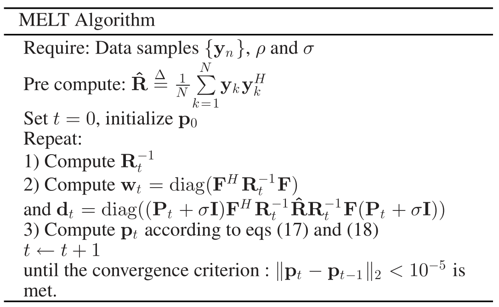

写在前面
最近需要讲论文，所以找了个简短的letter。还是结构化矩阵低秩表示方向的，不过是从极大似然估计角度给出的优化建模。
优化模型的构建
极大似然估计
对于服从高斯分布的样本{yk}k=1N，其联合概率密度函数为
p(y1,…,yN)=πMN∣R−1∣Nexp{−Tr(R−1XXH)}
取对数可得Tr(R−1XXH)−NlogdetR−1。记样本协方差矩阵为R^=N1∑k=1NykykH，取似然函数
Rminf(R)=Tr(R^R−1)+logdetR
该极大似然估计(MLE)具有唯一解RML=R^。
低秩Toeplitz矩阵约束的优化问题
当考虑到平稳时间序列的协方差阵是Hermitian Toeplitz矩阵，该结构化优化问题的解则不再显式表示。更进一步，秩约束条件则需要处理矩阵特征值，例如收缩阈值。对于这一类结构化保持低秩矩阵的极大似然估计问题，要么忽略Toeplitz矩阵结构，要么引入中间辅助变量。该文章则直接求解这一个极大似然估计问题。
对于的低秩Toeplitz矩阵求解问题如下：
Rminf(R)=Tr(R^R−1)+logdetRs.t.R=T+σI,rank(T)≤ρ,T∈T
下面利用Toeplitz矩阵的参数化表示，将上述问题转化为向量形式的优化问题
循环嵌入
Hermitian半正定Toeplitz协方差矩阵T∈T可在离散Fourier变换矩阵上表示
T=F~PF~∈RM×M
其中P∈RL×L为对角阵，对角线记为p=(p1,…,pL)T，F~=[IO]F∈RM×L，F∈RL×L为离散Fourier变换矩阵。Toeplitz矩阵除主对角线r0外共轭对称，因此可以使用2M−1个元素来表示，记为r=(r0,…,rM−1,rM−1∗,rM−2∗,…,r1∗)T，则p=Fr。
这种嵌入具有一种缺点，即频率有可能不在Fourier网格(grid)上。对于秩为r的半正定Toeplitz矩阵T，下面给出一种相似的Caratheodory参数化分解形式。
T=APAH
其中P为对角阵，对角元素为(α12,…,αr2)，矩阵A具有Vandermonde结构
A=⎝⎜⎜⎜⎜⎜⎛1ejw1ej2w1⋯ej(M−1)w11ejw2ej2w2⋯ej(M−1)w2…⋯⋯⋯⋯1ejwrej2wr⋯ej(M−1)wr⎠⎟⎟⎟⎟⎟⎞
则序列{wk}和序列{αk}表示频率和振幅。从Caratheodory参数化分解形式可以看出频率{wk}不受约束位于Fourier网格上，而基于离散Fourier变换矩阵的参数化需要严格要求频率位于Fourier网格上，可视为Toeplitz矩阵的近似表示。为提高参数化的准确性，可增加维度L。
向量形式的优化问题
下面用F来代替F~，因此对应的向量形式的等价优化问题如下。
pminf(p)=Tr(R^R−1)+logdetRs.t.R=F(P+σI)FH,P=diag(p),∥p∥0≤ρ
基于MM的模型求解算法
MM框架最核心的步骤是构造一个代理函数(surrogate)来控制目标函数的上界。下面首先给出一些目标函数的上界估计。
上界放缩
在第t次迭代中，记R的估计为Rt，P的估计为Pt。此时有Rt=APtAH。
logdetRt+Tr(Rt−1(R−Rt))Rt−1APtP−1PtAHRt−1≥logdetR⪰(APAH)−1
- 第一个式子可以利用函数logdet(⋅)为凹函数(concave)，也可从特征值角度结合一个基本不等式得到。
- 第二个式子是其他文献里证明的一个性质，这里的A可替换成F，P可替换成P+σI，Pt可替换成Pt+σI。
代理函数及最优化
有了这两个放缩，可构造一个放缩函数g(p∣pt)来控制f(p)。
f(p)=≤≤==Tr(R^R−1)+logdetRTr(R^R−1)+logdetRt+Tr(Rt−1R)+cTr(R^Rt−1F(Pt+σI)(P+σI)−1(Pt+σI)FHRt−1)+logdetRt+Tr(Rt−1(FPFH+σI))+cTr((P+σI)−1(Pt+σI)FHRt−1R^Rt−1F(Pt+σI))+Tr(FHRt−1FP)+cwtHp+dtH(p+σ1)−1+c=g(p∣pt)
其中
wtdt=diag(FHRt−1F)=diag((Pt+σI)FHRt−1R^Rt−1F(Pt+σI))
因此仅需要对g(p∣pt)求解极小化问题即可。
pkming(p∣pt)=wtHp+dtH(p+σ1)−1s.t.pk≥0,∥p∥0≤ρ
该问题显然是可分离变量的，对单个变量pj有
g(pj∣pt)=wjpj+pj+σdj
对应的最优解为
g⋆(pj∣pt)={σdj2djwj−σwj(pj⋆=0)(pj⋆=wjdj−σ)dj≤σwjdj>σwj
为满足∥p∥0≤ρ，仅需要计算所有分量最优解的差异
ej=σdj−(2djwj−σwj)
取前ρ个最大的ej，令对应的分量pj非零，其余分量设为零，可得满足所有约束的最优解。
算法流程图

注记
- 算法对初始值敏感
- 由g(p∣pt)生成的序列{pt}能保证f(p)单调递减
- 计算复杂度低
- 频率在Fourier网格仍是一个问题
- 没有计算Cramer-Rao界
- 噪声水平σ与矩阵秩ρ的估计
小结
前面写的基于Toeplitz结构的协方差估计都是使用截断奇异值分解+平均算子，本文则通过Toeplitz矩阵的参数化表示转化为向量形式的优化问题，利用MM算法求解极大似然估计问题。
References